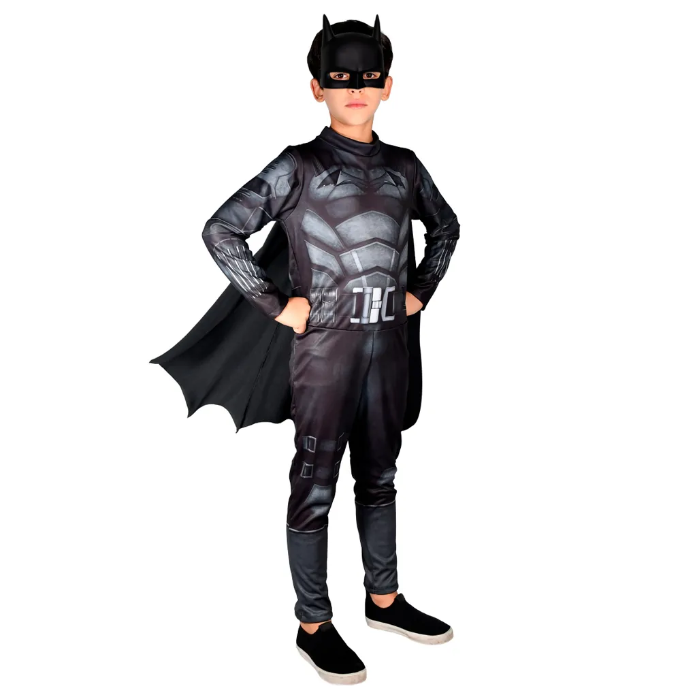
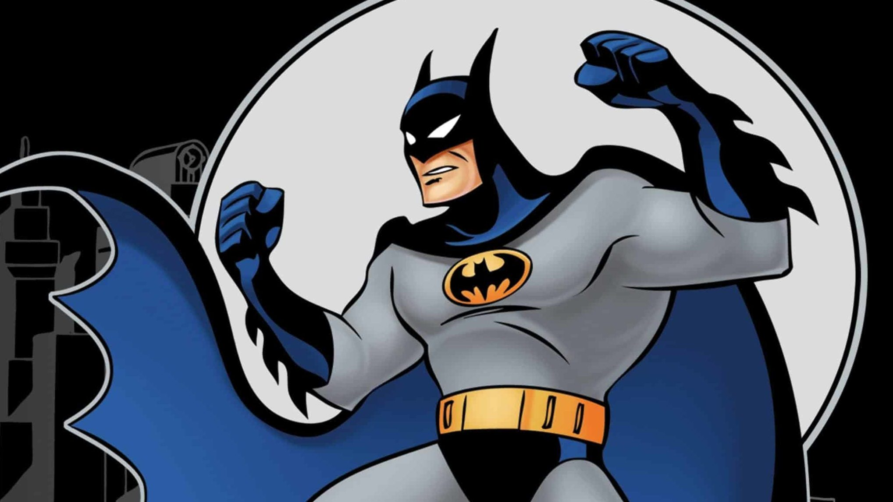
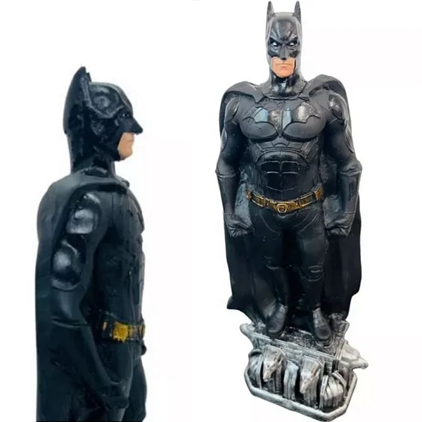

Quem é o Batman?
Batman (Bruce Wayne) é um personagem da DC Comics que atua como justiceiro de Gotham. Ele não tem superpoderes: sua força está em treinamento, inteligência e recursos (ou seja, rico).
Nas histórias, Gotham costuma representar problemas sociais reais: desigualdade, corrupção e violência urbana. Muitos quadrinhos usam o Batman como forma de crítica social, mostrando como decisões políticas, interesses econômicos, falhas nas instituições e o autoritarismo afetam o cotidiano das pessoas, especialmente nas periferias.
Galeria


